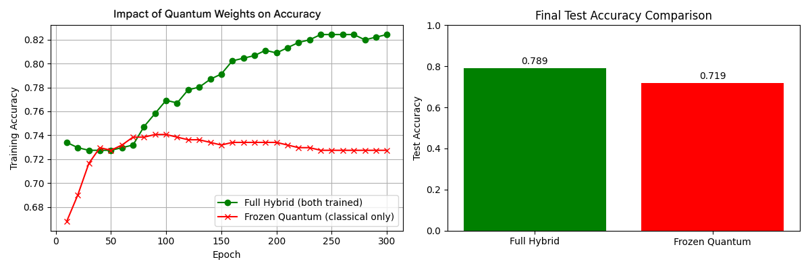
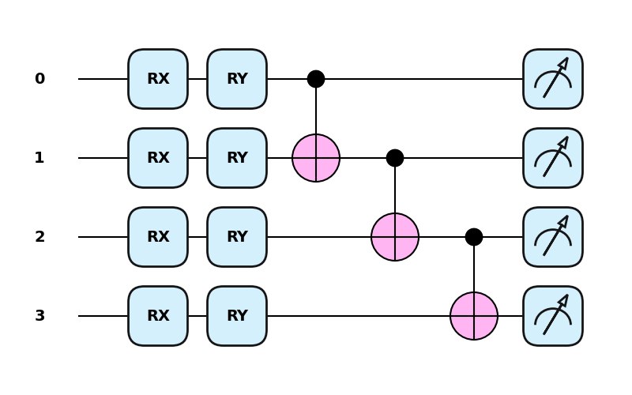
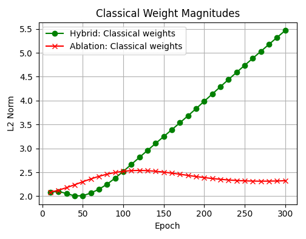

Benchmarking a Hybrid Quantum-Classical classifier with PennyLane and MLflow.
Introduction:
The overall goal with this project was to experiment with implementing a Quantum-Classical hybrid ML classifier, and to get familiar with the PennyLane Python library, as well as learning professional practices for benchmarking machine learning classifiers.
I implemented a hybrid Quantum-Classical machine learning classifier, using a variational quantum circuit in combination with a classical linear layer. The trained hybrid-model scored 78.9% accuracy on unseen data, indicating a successful implementation and a baseline to iterate further upon. Through ablation study analysis, it was determined that the inclusion of quantum parameters in combination with a classical layer resulted in a 7% increase in accuracy over the exclusive latter classifier. This suggests that our gradients were successfully propagating through the quantum circuit, and that our ansatz circuit was learning task-relevant features. In addition, analysis of the observations in this study revealed an interesting revelation: hybrid Quantum-Classical models can make progress through otherwise impassable plateaus. This is talked about more in detail in section 4
I learned a lot about the fascinating field of Quantum Computing, as well as how to responsibly implement experiment tracking and reproducibility through MLflow. Steps for future development would include analyzing circuit design to add expressivity, and researching which datasets are especially applicable for hybrid-quantum classifiers.
Contents:
- 1. Baseline Model - Classical Logistic Regression
- 2. Quantum Circuits with PennyLane
- 3. Hybrid Quantum-Classical Model
- 4. Results
1. Baseline Model - Classical Logistic Regression
I started by utilizing the scikit-learn logistic regression classifier on the Wisconsin Breast Cancer Dataset. This yielded an impressive accuracy of 96%, serving as a solid baseline for comparison.
Loading breast cancer dataset from scikit-learn
bc = load_breast_cancer()
X = bc.data
y = bc.target
Separating Data into training/test validation, using random seed 42
from sklearn.model_selection import train_test_split
from sklearn.decomposition import PCA
X_train, X_test, y_train, y_test = train_test_split(X, y, test_size=0.2, random_state=42)
n_qubits = 4
pca = PCA(n_components=n_qubits)
X_train_q = pca.fit_transform(X_train)
X_test_q = pca.transform(X_test)
from sklearn.linear_model import LogisticRegression
clf = LogisticRegression(solver="lbfgs")
clf.fit(X_train_q, y_train)
y_pred = clf.predict(X_test_q)
acc = accuracy_score(y_test, y_pred)
It is worth noting that this dataset is an especially ideal application for Logistic Regression. With a feature set that is remarkably linearly separable, logistic regression excels at finding a linear decision boundary with high accuracy. In addition, since false negatives would be unacceptable in this serious setting, utilizing a threshold activation function over a binary classifier provides a much-needed confidence interval.
2. Quantum Circuits with PennyLane
This is where the majority of my experimentation and learning took place. If you are unfamiliar with Quantum Computing, I would recommend checking out this excellent resource for an introduction.
This quantum circuit is a simplistic implementation of an ansatz using PennyLane's QNode function with 4 wires (4 qubits). PennyLane has several excellent articles on ansatz creation; I found this one on Quantum circuit structure learning particularly insightful.
Each wire begins with feature encoding through a single qubit rotation gates: around the x axis in the Bloch sphere, by the angle X[i], which determines the rotation angle. So essentially, our input value x is encoded into a quantum state, where each input represents a rotation angle.
We then add variational layers. For each layer, we do two steps:
- First, each wire is rotated around the y axis with a trainable parameter. In this way, we are able to create a feature space, where rotation angles are weights.
- Next, we create a "ladder" of CNOT gates. This allows us to create a sequence of quantum entanglement, which allows us to represent correlation between input features
Finally, at the end of each wire we have a measurement gate, which allows us to return the expected value of PauliZ on each qubit. This vector can be interpreted as the quantum feature range of continuous expected values ([-1,1]), which we can then use in the calculation of our loss function. This process is detailed more in section 3.
Use Principal Component Analysis to reduce the 30-dimensional feature set through feature extraction to 4 dimensions for the quantum classifier
import pennylane as qml
from pennylane import numpy as np
n_qubits = 4
pca_q = PCA(n_components=n_qubits)
X_train_q = pca_q.fit_transform(X_train)
X_test_q = pca_q.transform(X_test)
scaler = StandardScaler()
X_train_q = scaler.fit_transform(X_train_q)
X_test_q = scaler.transform(X_test_q)
# Labels stay as {0, 1} for sigmoid/BCE
y_train_q = y_train
y_test_q = y_test
dev = qml.device("lightning.qubit", wires=n_qubits)
@qml.qnode(dev, interface="autograd")
def qnode(x, weights):
# Feature encoding
for i in range(n_qubits):
qml.RX(x[i], wires=i)
# Variational layers
for l in range(weights.shape[0]):
for i in range(n_qubits):
qml.RY(weights[l, i], wires=i)
for i in range(n_qubits - 1):
qml.CNOT(wires=[i, i + 1])
# Return vector of expectation values (quantum feature vector)
return [qml.expval(qml.PauliZ(i)) for i in range(n_qubits)]
3. Hybrid Quantum-Classical Model
Training setup
The hybrid model combines a parameterized quantum circuit with a classical linear layer. The quantum circuit acts as a nonlinear feature extractor, while the classical layer performs logistic classification on the resulting quantum feature vector.
Essentially, our workflow is:
- Data Preprocessing:
- Load Wisconsin Breast Cancer dataset from scikit-learn
- Perform Principal Component Analysis with SVD to extract 4 features
- Apply StandardScaler normalization, improving gradient descent performance
- Model Initialization
- Initialize quantum weights with 4 qubits and 5 layers
- Initialize classical weights with 4 parameters
- Training Loop (300 epochs):
- Forward Pass: For each input x:
- Encode features via RX gates: x → |ψ(x)⟩
- Apply variational layers (RY rotations + CNOT entanglement)
- Measure expectation values: z = [⟨Z₀⟩, ⟨Z₁⟩, ⟨Z₂⟩, ⟨Z₃⟩] ∈ [-1,1]⁴
- Compute logit via dot product: logit = w * z
- predict values via sigmoid activation function: p = sigmoid(logit) ∈ (0,1)
- Compute Loss: Binary cross-entropy between predictions and labels
- Backward Pass: Compute gradients via parameter-shift rule (quantum) and autodiff (classical)
- Update Weights: The Adam-optimizer updates both quantum and classical weights jointly based on gradients
- Forward Pass: For each input x:
- Evaluation: Threshold probabilities at 0.5 for final classification
We selected AdamOptimizer as our optimizer to employ gradient based training for both quantum and classical parameters. While quantum natural gradients are theoretically optimal in accordance with the Fubini–Study geometry, our selection of the Adam-optimizer is sufficient as a "strong baseline for variational quantum algorithms" Cerezo et al. (2021) Variational Quantum Algorithms. arXiv. https://arxiv.org/abs/2012.09265 An extension of this project could involve implementing natural gradients, allowing for a higher computational complexity and Quantum circuit design.
For each input sample, the QNode returns a vector of expectation values:
# Example output from qnode
z = qnode(x, weights) # shape: (n_qubits,)
These expectation values lie in the range [-1, 1] and serve as learned quantum features. A classical weight vector is then applied:
def sigmoid(x):
return 1 / (1 + np.exp(-x))
def hybrid_model(x, weights, classical_weights):
z = qnode(x, weights)
logit = np.dot(classical_weights, z)
return sigmoid(logit)
The model is trained using binary cross-entropy loss:
def binary_cross_entropy(y_true, y_pred):
eps = 1e-8
return -np.mean(
y_true * np.log(y_pred + eps) +
(1 - y_true) * np.log(1 - y_pred + eps)
)
Both the quantum circuit parameters and classical weights are optimized jointly using gradient descent. MLflow is used to track hyperparameters, seeds, and evaluation metrics for reproducibility.
4. Results

Interpreting these results, we can see our model successfully implemented a hybrid quantum-classical classifier. It scored 82% on training data, and generalized to 78.9% on unseen data. Both weights trended towards a high L2 score, suggesting that the model was utilizing both weights equally. This is exemplified by an ablation analysis that revealed a plateau for classical weights when combined with frozen quantum weights
Interestingly, the ablation accuracy with exclusive classical weights and frozen quantum weights plateaued at 72%. This 7% increase suggests that a hybrid quantum-classical ML classifier may excel in nonlinear datasets, effectively acting as a "pseudo-SVM" and revealing perhaps otherwise unnoticeable data.
Hybrid QML models introduce nonlinear structure through quantum feature maps. However, when the dataset is already well described by a linear decision boundary, additional model complexity does not necessarily improve performance. So while this did not surpass the classical baseline of logistic regression (96.4%), the result is not surprising given that the breast cancer dataset is nearly linearly separable and therefore highly favorable to logistic regression.
Discussion
Although the hybrid model underperformed relative to logistic regression, the primary objective of this project was not to demonstrate quantum advantage, but to prototype and benchmark hybrid workflows in a reproducible manner.
Key takeaways include:
- Implementing differentiable QNodes in PennyLane
- Integrating quantum circuits into classical ML pipelines
- Using MLflow for experiment tracking and reproducibility
- Comparing hybrid models against appropriate classical baselines
Future work could include:
- Evaluating deeper circuits
- Testing sensitivity to initialization and random seeds
- Implementing QNG to correct for equilateral treatment of parameters
- Benchmarking on datasets with stronger nonlinear structure
Conclusion
This project demonstrates a complete hybrid quantum-classical ML workflow using PennyLane, including reproducible benchmarking against classical baselines. While the hybrid model did not outperform logistic regression on this dataset, the implementation provides a solid foundation for systematic experimentation with variational circuits and hybrid learning pipelines.
This blog highlights the importance of dataset selection, as the Wisconsin Breast Cancer dataset is highly linearly separable, and our current implementation did not provide an advantage over logistic regression. Creating carefully designed applications of quantum computing for machine learning classifiers is paramount.
All code, experiment logs, and configuration details are available in the accompanying GitHub repository.